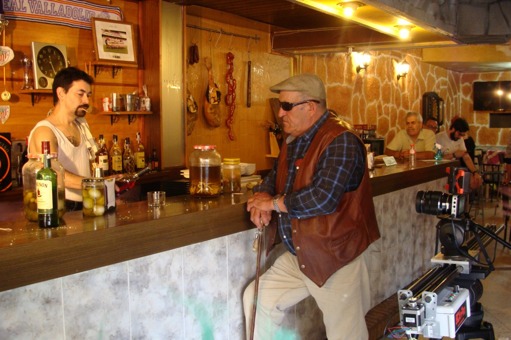
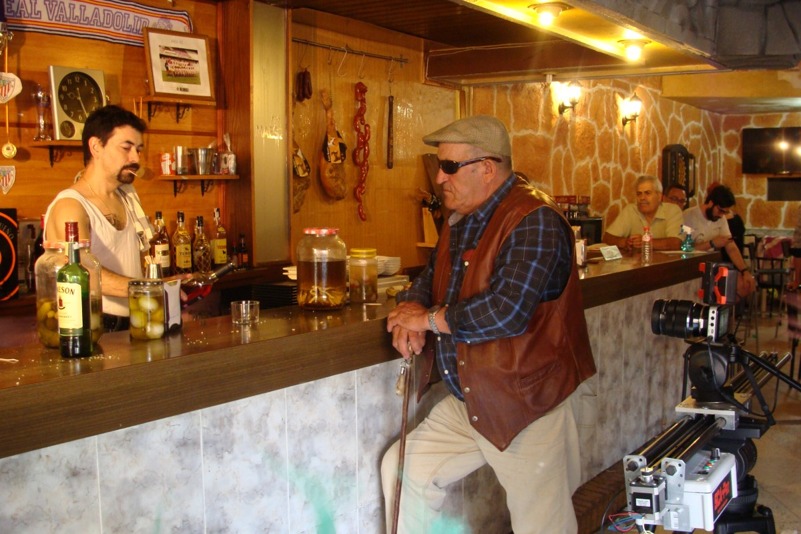

Somos un negocio familiar
Para comenzar a escribir sobre el origen de los bares debemos remontarnos bastantes años atrás.
Los primeros bares aparecen en el antiguo pueblo griego (época de Pompeya hasta la edad media) donde se desarrollaron
los establecimientos en los cuales se vendían bebidas. Desde entonces, poco ha evolucionado, hasta que nuestra pequeña familia, sí, esto
es un negocio familiar, decidió mezclar lo mejor de la comida tradicional con los platos veganos, el rock y heavy con los juegos de mesa
y el cerveceo tranquilo. De este modo surgió nuestra pequeña Faroles Taberna Rock

 
